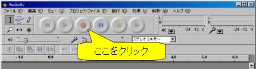
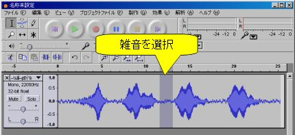
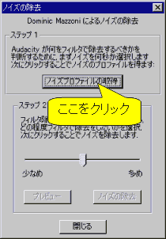
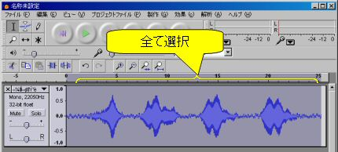
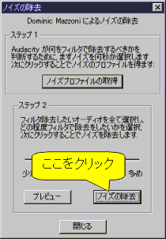
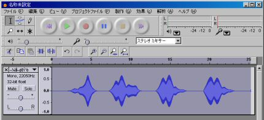
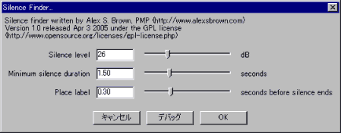
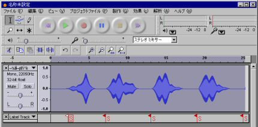
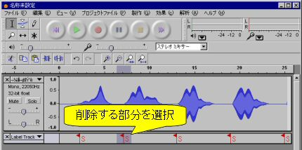
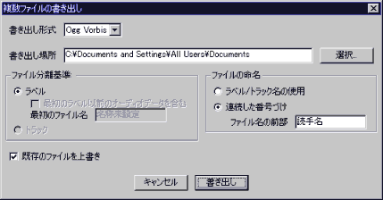

概要
このページではわすらもち用の自作の読み音声データの作成方法について説明します．Windowsパソコンで作業することを前提に書いています．
1. 音声データの入手
百人一首の読み上げ音声を入手する手段は主に下記の三つでしょう．
- 市販の読み上げCDからリッピングする
- MP3形式などでweb公開されている音声データをダウンロードしてくる.
- マイクを使って読みが上手い人の読み上げを録音する
現在では競技かるたに使えるCDはなかなか売っていませんが，頑張って見つけて下さい．
web公開されている百人一首の音声データについては [百人一首を覚えたい]から辿れるリンクにいくつかあるみたいです．
2. 使える音声データ形式とファイル名
わすらもちが対応している音声形式はWindows版とAndroid版はOgg Vorbis，iOS版はAACとMP3です．
一応ステレオにも対応しているはずですがファイルの容量などの関係上モノラルを推奨します．各ファイルの名前は以下のようになっている必要があります．
[読手名]_[3桁の札番号]_[上の句=1,下の句=2].[ogg,aac,mp3]
例えば，稲葉修至さんの有馬山の上の句なら「稲葉修至_058_1.ogg」，
山下迪子さんの小倉山の下の句なら「山下迪子_026_2.ogg」 です．ただし，序歌は「[読手名]_000_1.ogg」および「[読手名]_000_2.ogg」
という名前にして下さい．[読手名]_000_1.ogg に序歌の上の句と下の句一回目，[読手名]_000_2.oggに序歌の下の句二回目を入れるのを推奨します．
したがって全部で(上の句＋下の句)×(百首＋序歌)＝202個のファイルとなる訳です．
※補足1: 札番号一覧は [こちら] にあります．
※補足3: [Flexible Renamer] などファイル名を一括変換するソフトを利用すると楽かもしれません．
3. 音声ファイルの置き場所
Windows版の場合
わすらもちと同じフォルダに
@[読手名]
というフォルダを作って音声ファイルを入れれば，メニューに読手が追加されます．
Android版の場合
ストレージに
[読手名]/
というフォルダを作ってその中に202個の音声ファイルを入れ，わすらもちの設定の詠み手からこのフォルダを指定します．
iOS版の場合
202個の音声ファイルを一つのzipファイルとして圧縮し，それをiOSのストレージに移し，わすらもちの設定の詠み手からこのzipファイルを指定します．
4. マイクによる録音
まずは録音です．適当なマイクと音声編集ソフトを用意します． 今回はフリーの [Audacity] というソフトを使います．

図1: 録音開始
- 赤丸の所をクリックすれば録音開始です．
- 最初に序歌を読んで，それから札番号順に百首読んで下さい．
- 録音し終わったら[ファイル(F)]⇒[別名で書き出し (E) WAV...]でWAVファイルに保存します．
- 百首で大体30分間なので，Mono/22050Hz/16-bitなら約75MBのWAVE音声ファイルになるはずです．
※補足: 上の句と下の句の間および，下の句と上の句の間には5秒以上の間を空けて下さい．
5. ノイズ除去
よほど良い録音環境でない限り，出来上がったWAV音声ファイルには雑音が入っていると思います．
Audacityにはノイズ除去機能が付いているのでそれを使います．
- まず「どういう音が雑音なのか」をソフトに教えるために雑音の部分をどこでもいいので選択します(図2)．
- 次に[効果(c)]⇒[ノイズの除去...]を選択すると，図3のような画面が出るので[ノイズプロファイルの取得]をクリック．そうするといったん画面が閉じます．

図2: 雑音部分を選択

図3: ノイズプロファイル取得
これでどういう音が雑音なのか分かったので，ソフトはこの情報を元に雑音を除去する訳です．
- [編集(E)]⇒[選択...]⇒[全て(A)]で音声全体を選択します(図4)．
- 再び[効果(c)]⇒[ノイズの除去...]を選択すると図5のような画面が出るので，今度は[ノイズの除去]をクリックします(図5)．
- これでノイズが除去されます(図6)．

図4: 雑音を除去したい範囲を選択

図5: 雑音除去開始

図6: 雑音除去完了
6. 無音での分割
でき上がったものは一つの巨大な音声ファイルなので，これを各首ごとに分割する必要があります．
Audacityには無音を検知して分割してくれる機能があるのでそれを使います．
※注意: 最近のAudacityには「Sound Finder」という機能があるのでそっちを使った方がいいかもしれません．使い方は似たような感じです．
- 音声全体を選択してから[解析]⇒[Silence Finder...]をクリックすると図7のような画面が出るので，OKボタンをクリックします．
- [Silence Level:x] -x デシベル以下の音を無音とみなす
- [Minimum silence duration:y] 無音がy 秒続いたらラベルを設置
- [Place label:z] 無音が終了する z 秒前にラベルを設置
- すると図8のように下側に「Label Track」というのが表示されます．

図7: Silence Finder

図8: 赤いラベルが検知した無音部分
このラベルを元に分割するのですが，このまま分割すると序歌の上の句と下の句で分割してしまいます，
[読手名]_000_1.ogg序歌の上の句と下の句1回目の両方を入れないといけないのでこの間にあるラベルを削除しなければいけません．
- 「Label Track」の該当する部分を選択してから[編集(E)]⇒[無音(S)]を選びます(図9)．

図9: 検知したラベルの削除
- [ファイル(F)]⇒[複数ファイルの書き出し...]を選択すると図10のような画面が出るので下記のように設定します．
- 「書き出し形式」を「Ogg Vorbis」にします．
- 「連続した番号づけ」にチェックを入れます．
- 「ファイル名の前部」に読手名を入れます．
- 「書き出し」をクリックすると，[読手名]-001.ogg ∼ [読手名]-nnn.ogg という複数のファイルに分割されて出力されます．

図10: 音声ファイルの出力
出力したファイルはOgg Vorbis形式なので，次の章「7. Ogg Vorbisに変換」は飛ばして下さい．
7. Ogg VorbisやAACに変換
今回はfoobar2000というフリーウェアを使います．- ソフトを [foobar2000] からダウンロードしてインストールします．
- Ogg VorbisやAACのエンコーダーを [Free Encoder Pack] からダウンロードしてインストールします．AACに変換するにはiTunesもインストールしないといけないみたいです．
- 変換する音声ファイルをfoobar2000にドラッグ＆ドロップして選択します．
- 右クリックして[Convert]⇒[Convert to...]をクリックします．
- [Ogg Vorbis, 160kbps, q5.0]を選択してOKを押します．
8. 出来上がりのテスト
Windows版わすらもちには出来たoggファイルをチェックする機能が付いています．
[読手(Y)]⇒[チェック(C)]で各音声ファイルのデータをチェックできます．
この時に表示されるHEAD,TAILというのは，
HEAD: 読みが始まった位置(秒数)
TAIL: 読みが終わった位置(秒数)
です．この位置は設定のTHREASHOLD(Andriod版では閾値)で決まります．
わすらもちはファイルの先頭のHEAD秒と最後のTAIL秒を切り取ってから間に空白を作って繋げて再生します．
したがってこの位置が途中にある雑音などのせいで実際の読みの開始／終了位置からずれてしまうと正しく間を一秒に保てません．
雑音が小さい音声ファイルでは閾値を小さくしても大丈夫ですが，雑音が大きい音声ファイルを使う場合は閾値を上げて下さい．